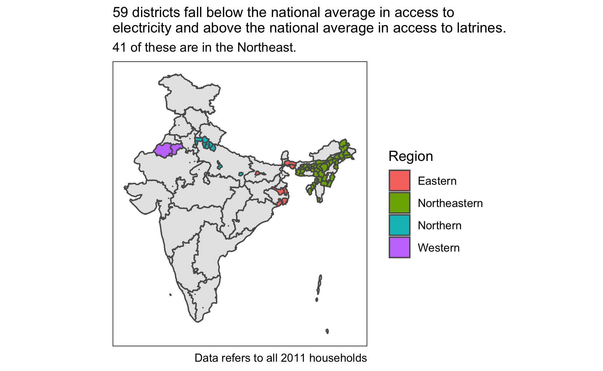

Use R to structure and query database tables of Indian census data
My recent blog posts have focused extensively on wrangling and visualizing data with R packages such as the {tidyverse}, {sf}, and {shiny}.
However, as the size of data grows beyond what can be stored in one’s local memory, along with a variety of other possible reasons, a relational database becomes more of a necessity. With this in mind, I have been exploring PostgreSQL, including how to access SQL databases without leaving the familiar confines of RStudio.
Previously, I wrangled together three decades of district-level Indian electricity and latrine access data. I used this dataset to:
In this post, I’ll demonstrate how I packaged this data into a PostGIS-enabled PostgreSQL database and how it can be queried from R. Specifically, this post covers:
In order to review how I created the R dataframes that I will write to the PostgreSQL database, please first examine this script here.
My previous dataframes were manipulated in such as way as to be prepared for their respective {shiny} applications. Thinking however of the most logical table structure for a database, I applied the following two steps. I divided country, state and district level data into separate tables. Moreover, I separated census data from spatial data.
Accordingly, I devised a database with three spatial tables (district and state shapes, plus another for the dot density map), three tables of census data (district, state and country-level), and one additional table of some useful state-identifying information such as state abbreviations, region, and union territory status. From these tables, I can use any combination of joins to create the data for any of the previous {shiny} apps.
This blog among other resources suggest it is possible to create a new SQLite database directly from R. However, that does not appear to be as simple with PostgreSQL. As a rarer task, I’ll just create a locally-hosted database from pgAdmin, the GUI for PostgreSQL with a simple one line command.
CREATE DATABASE in_household;With the database initialized, I can start creating tables after establishing a connection. One can do this in R with the help of the {DBI} package.
The {DBI} package serves as a generic database interface for R. Packages like {RPostgres}, {RSQLite} or {RMySQL} then are implementations to forge connections between R and a particular database through the DBI interface.
For connecting to PostgreSQL from R, there are two possible implementation packages: {RPostgreSQL} and {RPostgres}. {Rpostgres} is newer and under more active development. According to this blog, it is also faster. However, when creating a connection via {RPostgres}, I had some trouble working with spatial data. This may be because I seem to be missing the correct driver. Nevertheless, there is also an {rpostgis} package with some handy functions that depends on the older {RPostgreSQL}. As speed won’t be a concern for me here, I’ll use the older {RPostgreSQL} implementation.
In the dbConnect() function from the {DBI} package, I specify PostgreSQL as the driver and give the database name. In many cases, here is where the user name and passwords would also be supplied.
library(DBI)
library(RPostgreSQL)
library(rpostgis)
library(dbplyr)
library(dplyr)
library(sf)
library(ggplot2)
con <- dbConnect(drv = "PostgreSQL", host = "localhost",
dbname = "in_household")
class(con)
[1] "PostgreSQLConnection"
attr(,"package")
[1] "RPostgreSQL"Having connected to a database, I can now start writing data to it. I’ll start with the non-spatial data, demonstrating three methods.
DBI::dbWriteTable() function.copy_to().In an R Markdown document, I can change the language engine from the default of R to another language, such as SQL. I then just need to specify the existing connection made through the {DBI} package. The result below is the same as if entering the query directly in pgAdmin.
I do this in two stages. First I need a CREATE TABLE statement to initiate the table fields and associated constraints.
CREATE TABLE IF NOT EXISTS states_abb_region_ut (
state varchar(90), -- state name,
abb char(2) NOT NULL, -- state abbreviation
region varchar(90) NOT NULL, -- state region
year date CHECK
((year IN ('1991-01-01',
'2001-01-01','2011-01-01'))), -- state year (states change over time)
ut_status boolean NOT NULL, -- is it a union territory?
CONSTRAINT state_key PRIMARY KEY (state, year)
);Then I use a COPY statement to import the data with a path to a local csv file.
Rather than first writing an R object to a csv file, I can skip this intermediary step and, as shown below, directly write an R dataframe into a table in a remote database using the DBI::dbWriteTable() function.
# district_census is a dataframe in R
if (dbExistsTable(con, "district_census"))
dbRemoveTable(con, "district_census")
# Write the data frame to the database
dbWriteTable(con, name = "district_census", value = district_census,
row.names = FALSE)
On exporting the data, SQL has made its best guess at the data type of each column. It recognized year as a date, and the count data as integers. It assigned non-numeric data as text and decimal numbers as real numbers.
If I want to alter the table, such as changing data types or assigning constraints like primary keys or NOT NULL requirements, I can do that through the dbExecute() function. In this case, the primary key for the “district_census” table is the unique combination of seven variables.
dbExecute(con,
"ALTER TABLE district_census
ADD CONSTRAINT district_census_key PRIMARY KEY
(district, state, year, societal_section,
demo_section, water_source, water_avail);")
I can change data types with a command like this:
dbExecute(con,
"ALTER TABLE district_census
ALTER COLUMN geo_section TYPE char(8),
ALTER COLUMN state TYPE varchar(90),
ALTER COLUMN societal_section TYPE varchar(3),
ALTER COLUMN demo_section TYPE char(5),
ALTER COLUMN water_source TYPE varchar(90),
ALTER COLUMN water_avail TYPE varchar(90),
ALTER COLUMN district TYPE varchar(90);")
I could also use the {purrr} package to add constraints for columns requiring the same restrictions.
percentages <- c("ea","la","ea_la","ea_ln","en_la","en_ln","within","near",
"away","tap_treated","tap_untreated","covered_well",
"uncovered_well","hand_pump","tube_well","others")
walk(percentages, ~ {
dbExecute(con,
paste0("ALTER TABLE district_census ADD CONSTRAINT ", .x,
"_check CHECK (", .x, " >= 0 AND ", .x, " <= 1 OR NULL);")
)
})
Let’s check if adding these constraints and key worked:
SELECT constraint_name, constraint_type
FROM information_schema.table_constraints
WHERE table_name = 'district_census';| constraint_name | constraint_type |
|---|---|
| ea_check | CHECK |
| la_check | CHECK |
| ea_la_check | CHECK |
| ea_ln_check | CHECK |
| en_la_check | CHECK |
| en_ln_check | CHECK |
| within_check | CHECK |
| near_check | CHECK |
| away_check | CHECK |
| tap_treated_check | CHECK |
It shows that the primary key, checks on percentage columns, and not null columns have been successfully added to the table.
Similar to {DBI}’s dbWriteTable(), I can also directly write R dataframes to a remote database with {dplyr}.
{dplyr} is of course well-known as the {tidyverse}’s workhorse package for manipulation of data stored in local memory. However, with the help of {dbplyr}, it can also be used to manipulate data stored in remote databases.
{dplyr}’s copy_to() function, as explained in the {dbplyr} vignette, is a quick and dirty way to write a dataframe to a remote database. The command below adds the “state_census” dataframe to the database.
copy_to(con, state_census, "state_census", temporary = FALSE)
As with the dbWriteTable() method, I would need to subsequently alter any data types, keys and other constraints.
Because I had already written the necessary SQL import statements, I’ll use the first method to import the remaining table (country_census). This code can be found in the “write_tables_sql” folder.
With the census data in place, I will now write the spatial data from R to the database. Doing so requires first installing the PostGIS extension. PostGIS is a spatial database extender for PostgreSQL. If you are familiar with R’s {sf} package, PostGIS will feel familiar– down to functions beginning with “ST_”.
One line of SQL code installs PostGIS.
I can confirm the installation has been succesful by checking the version number. (I’ll explain the dbGetQuery() function in a later section).
dbGetQuery(con, "SELECT postgis_full_version();")
postgis_full_version
1 POSTGIS="2.5.2 r17328" [EXTENSION] PGSQL="110" GEOS="3.7.1-CAPI-1.11.1 27a5e771" PROJ="Rel. 5.2.0, September 15th, 2018" GDAL="GDAL 2.3.3, released 2018/12/14" LIBXML="2.9.9" LIBJSON="0.13.1" LIBPROTOBUF="1.3.1" RASTERI can also confirm this through a function from the {rpostgis} package.
pgPostGIS(con)
[1] TRUEI’ll demonstrate two methods to write spatial data. The first writes an ESRI shapefile to a database through the command line. The second directly writes an {sf} object through the st_write() function.
The first method of writing spatial data to a database does not involve R or RStudio at all. Instead it uses the command line. By opening a terminal window and navigating to the correct directory, I can write a shapefile with the following command. Note that this only works with the shapefile format and not other formats of spatial data.
shp2pgsql -I -s 4326 -W Latin1 district_shapes.shp district_shapes | psql -d in_household -U postgresshp2pgsql is a command line tool that comes with PostgreSQL for converting ESRI shapefiles into SQL suitable for insertion into a PostGIS-enabled PostgreSQL database.
Breaking down this command, note that:
sf::st_write()As in the first method shown for writing non-spatial data, the workflow above includes an intermediary step, in this case, the creation of an ESRI shapefile from the existing {sf} object. This may be useful in some cases, but ESRI shapefiles have certain limitations. For instance, field names greater than ten characters will be automatically abbreviated.
We should, however, be able to directly write an {sf} object to the database. I can do this with the st_write() function. Placing the st_write() function inside the purrr::walk() function provides for writing any number of spatial tables in a list or vector.
As shown below, I can confirm that the spatial data tables have been added with a function from the {rpostgis} package. I can also note that the file written as an ESRI shapefile has a geometry column named “geom”, whereas the objects written with st_write() hold their geometry in a column named “geometry”.
pgListGeom(con, geog = TRUE)
schema_name table_name geom_column geometry_type
1 public district_shapes geom MULTIPOLYGON
2 public electricity_latrine_dots geometry GEOMETRY
3 public state_shapes geometry GEOMETRY
type
1 GEOMETRY
2 GEOMETRY
3 GEOMETRYNow that I have imported the requisite tables, I can begin querying the database from R. It is useful to first explore the database with a function like DBI::dbListTables() to see the names of the tables present.
dbListTables(con)
[1] "states_abb_region_ut" "country_census"
[3] "spatial_ref_sys" "electricity_latrine_dots"
[5] "state_shapes" "district_shapes"
[7] "district_census" "state_census" Note that I did not explicitly create one table in the database, “spatial_ref_sys”. It gets created after installing the PostGIS extension.
Another useful {DBI} function is dbListFields() to examine the columns in a specific table by specifiying the connection and the table name.
dbListFields(con, "states_abb_region_ut")
[1] "state" "abb" "region" "year" "ut_status"A similar {rpostgis} function gives a bit more information about the nature of the fields stored in any table.
dbTableInfo(con, "electricity_latrine_dots")
column_name data_type is_nullable character_maximum_length
1 sctl_sc text YES NA
2 dm_sctn text YES NA
3 year date YES NA
4 categry text YES NA
5 n integer YES NA
6 sum_hh integer YES NA
7 geometry USER-DEFINED YES NAHaving explored the contents of a database connection, I want to start pulling data from the database into R. To start, I can use the DBI::dbReadTable() function to import an entire remote table into R as a dataframe.
state_census_db <- dbReadTable(con, "state_census")
class(state_census_db)
[1] "data.frame"However, this is rarely optimal, especially if the tables are large. More often than not, you’ll only want a portion of a table stored in a database. In those situations, you want to query the database to retrieve some specified selection of a table.
That can be achieved in a number of different ways, including:
DBI::dbGetQuery() functiondplyr::tbl() and query it with SQLdplyr::tbl() and query it with {dplyr} syntaxThe first option for querying an SQL database from R includes just writing SQL code inside an R Markdown chunk where the language engine has been changed to SQL, as demonstrated previously. The query below shows the ten states with the lowest rates of electricity access among rural ST households in 2011.
Using the output.var chunk option allows me to save the query output into a new dataframe. This however runs into the same problem as dbReadTable() for large datasets.
head(lowest_ea_states)
state total_hh num_ea electricity
1 Bihar 387584 27164 0.07
2 Odisha 2090443 263011 0.13
3 Uttar Pradesh 359499 63928 0.18
4 Assam 814320 187676 0.23
5 Jharkhand 1542273 367042 0.24
6 West Bengal 1116320 287369 0.26dbGetQuery() functionAnother approach provides more query flexibility than dbReadTable() while staying within an R chunk to do the job. We can place any SQL query inside the dbGetQuery() function. Here we find the percentage of rural households among South Indian states having access to water within their household premises in 2011.
water_southern_2011 <- dbGetQuery(con,
"SELECT s.state, num_total, num_within,
ROUND(within::numeric, 2) AS water_within_home
FROM state_census AS s LEFT JOIN states_abb_region_ut AS sabr
ON s.state = sabr.state AND
s.year = sabr.year
WHERE region = 'Southern' AND
s.year = '2011-01-01' AND
societal_section = 'ALL' AND
demo_section = 'Rural' AND
water_source = 'All Sources' AND
water_avail = 'Total'
ORDER BY within DESC;")
water_southern_2011
state num_total num_within water_within_home
1 Kerala 4095674 2984553 0.73
2 Puducherry 95133 57764 0.61
3 Andhra Pradesh 14246309 4486906 0.31
4 Karnataka 7864196 2091969 0.27
5 Tamil Nadu 9563899 1625884 0.17Not surprisingly, we can see that Kerala tops the list by a wide margin. Tamil Nadu’s rate is particularly poor.
The dbGetQuery() function returns a dataframe for the specified query. However, when dealing with large datasets, this may not always be the best form of output. Sometimes you may want a “lazier” approach.
class(water_southern_2011)
[1] "data.frame"dplyr::tbl() and query it with SQLWith the addition of the {dbplyr} package, {dplyr} can be used to access data stored on a remote server. It is designed to be as lazy as possible in that it never pulls data into R unless explicitly requested.
For example, I can create a reference to a remote table with the tbl() function and execute a query wrapped inside the sql() function. Instead of a dataframe however, this returns a connection object.
Printing the object will show the data almost like a normal dataframe. However, it won’t return the number of observations (nrow() fails) because the data is not yet actually in R. The query below finds districts in 2011 with the largest raw difference between rates of household access to electricity and latrines.
largest_gap <- tbl(con,
sql("SELECT state, district, ea, la,
ABS(ea - la) AS gap
FROM district_census
WHERE year = '2011-01-01' AND
societal_section = 'ALL' AND
demo_section = 'Total' AND
water_source = 'All Sources' AND
water_avail = 'Total'
ORDER BY gap DESC"))
class(largest_gap)
[1] "tbl_PostgreSQLConnection" "tbl_dbi"
[3] "tbl_sql" "tbl_lazy"
[5] "tbl" Looking at the gap between electricity and latrine rates finds districts all across the country.
head(largest_gap)
# Source: lazy query [?? x 5]
# Database: postgres 11.4.0
# [seanangiolillo@localhost:5432/in_household]
state district ea la gap
<chr> <chr> <dbl> <dbl> <dbl>
1 Chhattisgarh Champa 0.898 0.152 0.746
2 Chhattisgarh Kabeerdham 0.852 0.132 0.720
3 Tamil Nadu Viluppuram 0.931 0.211 0.719
4 Tamil Nadu Ariyalur 0.896 0.181 0.715
5 Jammu & Kashmir Kathua 0.929 0.221 0.708
6 Karnataka Gadag 0.919 0.212 0.707To actually import the data into R, after arriving at the correct query, apply the collect() function.
dplyr::tbl() and query it with {dplyr} syntaxInstead of writing the query as SQL code, I can return the same results with {dplyr} syntax, thanks to {dbplyr}.
# still a connection
my_gap <- tbl(con, "district_census") %>%
filter(
year == '2011-01-01',
societal_section == 'ALL',
demo_section == 'Total',
water_source == 'All Sources',
water_avail == 'Total'
) %>%
mutate(gap = abs(ea - la)) %>%
select(state, district, ea, la, gap) %>%
arrange(desc(gap))
class(my_gap)
[1] "tbl_PostgreSQLConnection" "tbl_dbi"
[3] "tbl_sql" "tbl_lazy"
[5] "tbl" {dbplyr} translates {dplyr} code to SQL before sending it to the database. We can actually see the SQL query generated from {dplyr} code using the show_query() function.
show_query(my_gap)
<SQL>
SELECT "state", "district", "ea", "la", ABS("ea" - "la") AS "gap"
FROM "district_census"
WHERE (("year" = '2011-01-01') AND ("societal_section" = 'ALL') AND ("demo_section" = 'Total') AND ("water_source" = 'All Sources') AND ("water_avail" = 'Total'))
ORDER BY "gap" DESCIt’s not as readable as the original SQL code I wrote, but, on pasting it into pgAdmin, I can see that it works. The {dbplyr} vignette notes that it may not be the most natural SQL code for more complicated queries, but, if you don’t know any SQL, it’s a great substitute.
Thus far, the queries shown have been fairly simple. I now want to generate some more interesting queries.
My project exploring how access to electricity covaries with access to latrines revealed a number of districts that fell below the national average in access to electricity, but above the national average in access to latrines. As this is an unusual combination, I want to query the database to find these districts.
Among all 2011 households, at the All-India level, 67% and 47% were the national averages for household access to electricity and latrines, respectively, as shown in the query below.
dbGetQuery(con,
"SELECT ROUND(ea, 2) AS electricity,
ROUND(la, 2) AS latrines
FROM country_census
WHERE year = '2011-01-01' AND
societal_section = 'ALL' AND
demo_section = 'Total' AND
water_source = 'All Sources' AND
water_avail = 'Total'")
electricity latrines
1 0.67 0.47Next, with an SQL query in an R Markdown chunk with a SQL engine, I’ll save a view of all districts (matching the same year and other criteria) that fall below the national average in electricity access and above the national average in latrine access.
CREATE OR REPLACE VIEW districts_below_ea_above_la AS
SELECT *
FROM district_census
WHERE year = '2011-01-01' AND
societal_section = 'ALL' AND
demo_section = 'Total' AND
water_source = 'All Sources' AND
water_avail = 'Total' AND
ea < (
SELECT ea
FROM country_census
WHERE year = '2011-01-01' AND
societal_section = 'ALL' AND
demo_section = 'Total' AND
water_source = 'All Sources' AND
water_avail = 'Total'
) AND
la > (
SELECT la
FROM country_census
WHERE year = '2011-01-01' AND
societal_section = 'ALL' AND
demo_section = 'Total' AND
water_source = 'All Sources' AND
water_avail = 'Total'
);Then in the code below, I join two references to remote tables using the same {dplyr} syntax I would use to join two dataframes. Counting the districts by region reveals that 41 of these 59 regions fall in the Northeastern states.
tbl(con, "districts_below_ea_above_la") %>%
left_join(
tbl(con, "states_abb_region_ut"),
by = c("state", "year")
) %>%
count(region, sort = TRUE) %>%
collect()
# A tibble: 4 x 3
# Groups: region [4]
region .add n
<chr> <lgl> <dbl>
1 Northeastern TRUE 41
2 Northern TRUE 9
3 Eastern TRUE 7
4 Western TRUE 2Finally, let’s plot these districts on a map.
# join region column into selected 59 districts
tbl(con, "districts_below_ea_above_la") %>%
left_join(
tbl(con, "states_abb_region_ut"),
by = c("state", "year")
) %>%
collect() %>%
# join in corresponding district shapes
left_join(
st_read(con, query = "SELECT *
FROM district_shapes
WHERE year = '2011-01-01';"),
by = c("district", "state", "year")
) %>%
st_as_sf() %>%
ggplot() +
# add background state shapes
geom_sf(
data = st_read(con, query = "SELECT *
FROM state_shapes
WHERE year = '2011-01-01'")
) +
# color 59 districts by region
geom_sf(aes(fill = region)) +
coord_sf(datum = NA) +
labs(
title = "59 districts fall below the national average in access to\nelectricity and above the national average in access to latrines.",
subtitle = "41 of these are in the Northeast.",
caption = "Data refers to all 2011 households",
fill = "Region"
) +
theme_bw() +
theme(
plot.title = element_text(size = 11),
plot.subtitle = element_text(size = 10)
)
ggsave("img/above_below_map.png")

When finished, it’s advised as good practice to formally disconnect from the database. The following command does this.
dbDisconnect(con)
[1] TRUEIn this post, I’ve tried to introduce a few different options for the following:
In compiling this post, I found all of the resources below to be especially useful:
CRAN’s manual on R Data Import/Export has a helpful section on relational databases introducing uses for a databse and the RDBMS structure.
RStudio has a website devoted to using databases with R covering topics like connections, queries, and best practices.
Data Carpentry has a nice tutorial on accessing a database from R and running queries.
For a more in-depth look at SQL itself, I found the book Practical SQL by Anthony DeBarros to be a great starting point.
Text and figures are licensed under Creative Commons Attribution CC BY-NC 4.0. The figures that have been reused from other sources don't fall under this license and can be recognized by a note in their caption: "Figure from ...".